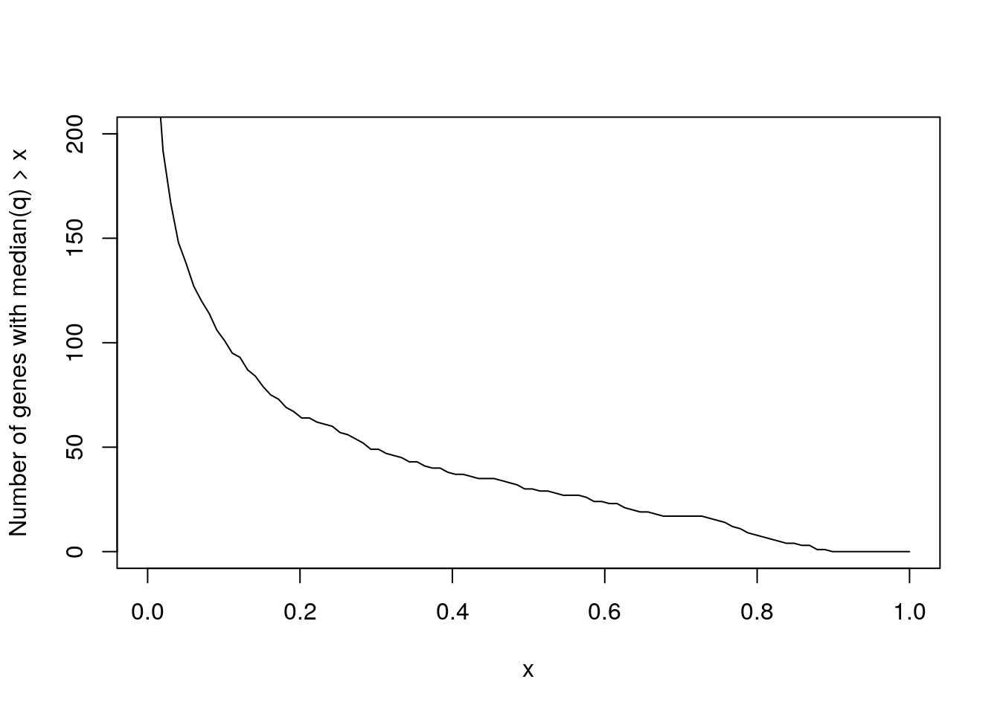
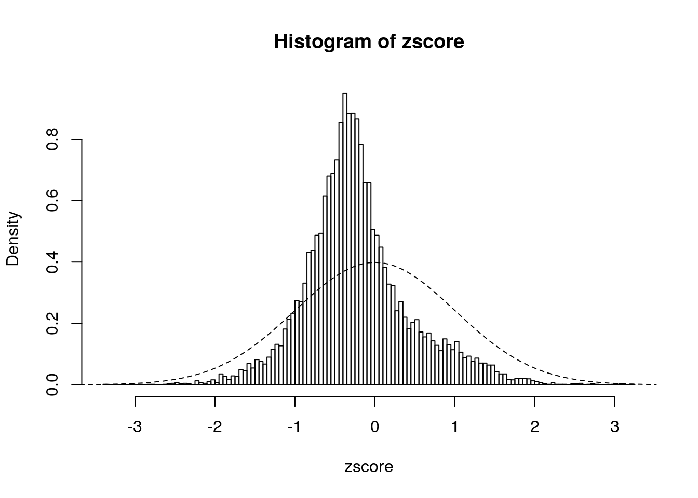
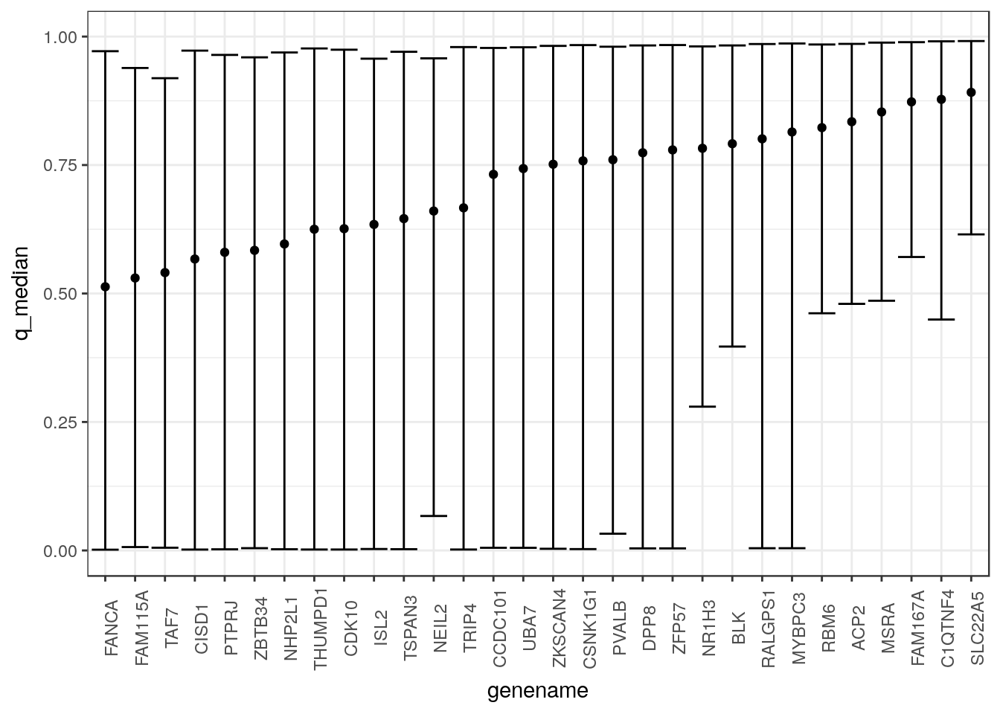
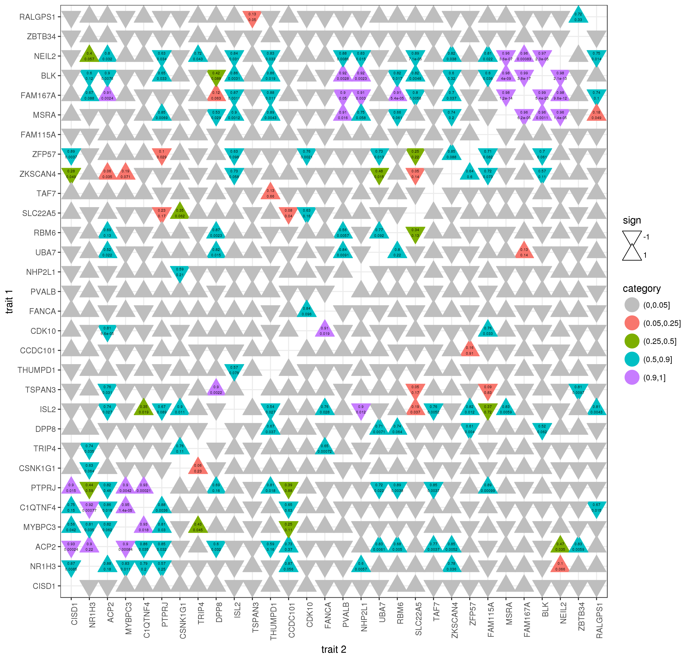

I applied CAUSE to look for genes whos expression levels could be causally associated with Crohn disease (CD). To do this I used GWAS sumarry statistics from the IBDgenetics consortium and eQTL summary statsitics calculated from the DGN data set.
The GWAS data are based on a meta analysis of 7 studies of European ancestry individuals. It includes 11,002,658 SNPs. After filtering out indels and strand ambiguous SNPs, we retain 8,126,897.
eQTL test statisicts for the DGN data were calculated by Nick using 922 individuals. There are 12,441 transcripts and 625,883
This process takes about 10 minutes on 8 cores which is primarily for the LD pruning step. We LD prune to reduce the number of SNPs we feed into later steps. This leaves 607,428 SNPs before pruning and 112,073 SNPs after pruning. This pruning does not consider any of the association test statistics.
This takes about 1 minute per transcript.
This takes about 1 minute per transcript using 8 cores. We estimate both mixture parameters and .
This is the most computationally intensive step. We could consider not LD pruning and just using the whole LD block surrounding top SNPs. I ran this in 125 jobs (each processes 100 transcripts) each of which used 8 cores and 5G of memory. Each job took about 10 minutes.
This takes only a few seconds since SNP sets are usually fewer than 100.
The plot below shows the number of genes with a posterior median for \(q\) above various thresholds.
library(readr)
res <- read_tsv("../data/cause_results_1e-3_summary.tsv.gz")## Parsed with column specification:
## cols(
## transcript = col_double(),
## genename = col_character(),
## p0_ash = col_double(),
## q_0.05 = col_double(),
## q_median = col_double(),
## q_0.95 = col_double(),
## b_0.05 = col_double(),
## b_median = col_double(),
## b_0.95 = col_double(),
## zscore = col_double(),
## file = col_character()
## )x <- seq(0, 1, length.out=100)
y <- sapply(x, function(xx){sum(res$q_median >= xx)})
plot(x, y, type="l", ylim=c(0, 200), ylab="Number of genes with median(q) > x")
There are 30 genes with posterior medians above 0.5.
Below I show a histogram of \(z\)-scores comparing the causal and shared model.
with(res, hist(zscore, breaks=100, probability = TRUE))
curve(dnorm(x, 0, 1), from=-4, to = 4, add=TRUE, lty=2)
These \(z\)-scores don’t appear to be normally distributed which suggests they may not actually behave as \(z\)-scores. I will check their distribution in simulations.
Below I show 90% credible intervals and posterior medians for q for all genes with a posterior median greater than 0.5.
gene_names <- arrange(res, q_median) %>% with(., genename)
res$genename <- factor(res$genename, levels=gene_names)
plt <- filter(res, q_median > 0.5) %>%
ggplot(.) + geom_point(aes(x=genename, y=q_median)) +
geom_errorbar(aes(x=genename, ymin=q_0.05, ymax=q_0.95)) +
scale_y_continuous(limits=c(0, 1)) +
theme_bw() + theme(axis.text.x=element_text(angle=90))
plt
Besided the top two genes, I couldn’t find any relationship between most of these genes and Crohn disease. The exceptions are
C1QTNF4 has not (that I can find) been linked to Crohn disease but it has been linked to SLE which is related. It also appears that many of these may be correlated with each other. To check this, I ran CAUSE on pairwise combinations of the top genes:

In particular, C1QTNF4 is correlated with four of the top genes suggesting that these results may be spurious.
Notes about other genes:
This R Markdown site was created with workflowr